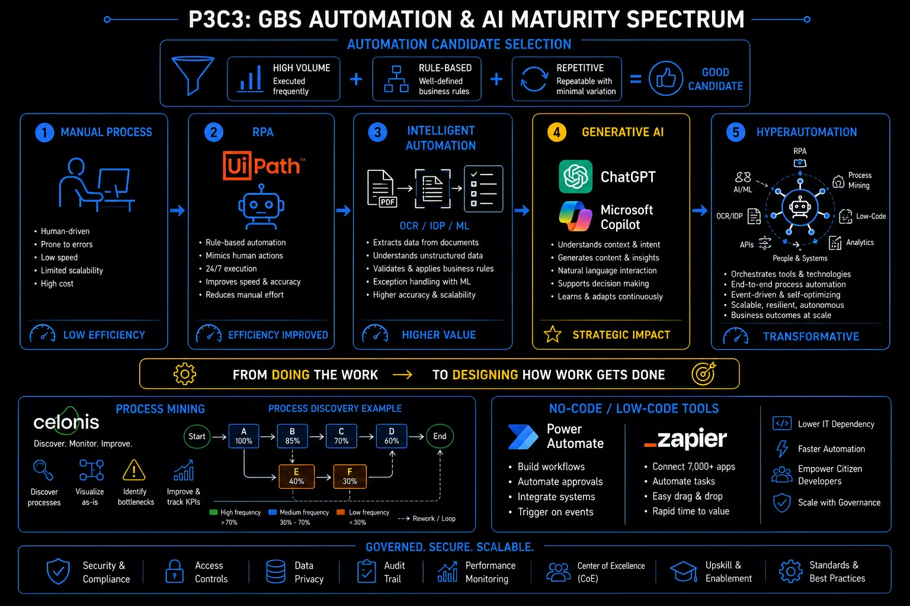

Pillar 3 · Cluster 3
Automation and AI in GBS operations
From RPA bots handling invoice matching to AI copilots drafting executive summaries, automation is reshaping what GBS teams do every day. Understanding the tiers, the trade-offs, and the governance requirements separates operators from leaders.
Topic 01 · Robotic Process Automation
RPA — what it actually does and where it breaks
RPA automates the clicks, not the thinking. That distinction defines where it works, where it fails, and why clean data matters more than clever bots.
What it does: Robotic Process Automation uses software robots to mimic human interactions with applications — the key word is "predefined."
- Clicks buttons, copies data between systems, fills forms, and runs predefined sequences
- Excels at high-volume, rule-based, stable processes where the steps are identical every time
- Textbook candidates: invoice data entry from a structured template, payroll file uploads between systems, report distribution to fixed distribution lists
Where it breaks: RPA does not understand context — it follows instructions. Exceptions, unstructured inputs, and unstable interfaces break bots constantly.
- A bot trained to click the third button on screen four crashes when a system update moves that button
- Dirty data = dirty outputs, now produced at machine speed with an automated timestamp
- Inconsistent processes and unannounced system changes are the top bot-killers in GBS
- Rule-based — decision logic can be expressed as if/then without human judgment
- High volume — enough transactions to justify the build and maintenance cost
- Stable inputs — data format, source system, and screen layout do not change frequently
- Low exception rate — fewer than 10-15% of cases require manual intervention
- Structured data — the bot needs predictable fields, not free-text interpretation
- Defined trigger — the process starts from a clear event (file arrival, time schedule, email receipt)
- Automating a broken process — the bot now produces wrong outputs faster and at scale
- No maintenance plan — system updates break bots and nobody is assigned to fix them
- Overpromising ROI — counting theoretical FTE savings without accounting for bot maintenance, exception handling, and governance overhead
- Ignoring data quality — dirty master data in, dirty outputs out, but now with a timestamp that says "automated"
Every RPA implementation guide will tell you to "start small and scale." The part they skip is that RPA needs clean, standardized data and stable processes before it adds value. If your vendor master has duplicates, your invoice formats vary by supplier, or your approval matrix changes quarterly, fix those first. Automating chaos does not create order — it creates faster chaos with an audit trail.
RPA layer — what bots do and where they break

GBS automation & AI maturity spectrum: from doing the work to designing how work gets done
Topic 02 · Intelligent Document Processing
IDP and OCR — reading what bots cannot
When documents arrive as PDFs, scanned images, or email attachments, standard RPA cannot process them. That is where intelligent document processing fills the gap.
Optical Character Recognition (OCR) converts images of text into machine-readable data. Intelligent Document Processing (IDP) goes further — using machine learning to turn documents into structured ERP transactions.
- Identifies document types automatically
- Extracts specific fields: invoice number, amount, date, vendor name
- Validates extracted data against business rules
- Flags exceptions for human review — keeping humans on edge cases, not data entry
- Invoice processing — extract header and line-item data from PDF invoices for three-way matching
- Contract extraction — pull key terms (dates, amounts, parties, renewal clauses) from legal documents
- Employee document processing — read identity documents, tax forms, and certificates during onboarding
- Bank statement reconciliation — parse bank statements in varying formats for cash application
- Customs and trade documents — extract classification codes and values from shipping paperwork
- Structured documents (standard templates, fixed layouts) — 95%+ extraction accuracy achievable
- Semi-structured (invoices from different vendors) — 80-90% accuracy, requires training per vendor format
- Unstructured (free-text emails, handwritten notes) — 60-75% accuracy, always needs human review
- Accuracy improves with volume — more documents processed means better model training
Topic 03 · Generative AI
GenAI and Copilot — the tiers of value for GBS
Generative AI is not one thing. The value depends on how it is deployed, what data it accesses, and whether the organization has built the governance to use it safely.
Generative AI in GBS operations falls into distinct tiers, each with a different ceiling on value:
- Standalone tools. Tools like ChatGPT help individual analysts draft communications, summarize documents, or troubleshoot formulas. Useful, but the value stays with the individual.
- Integrated copilots. Microsoft Copilot embedded in Excel, Teams, Outlook, and SharePoint. The strength of Copilot is not the language model itself. It is the Retrieval-Augmented Generation (RAG) layer that connects the model to your organization's data across Microsoft 365. When Copilot summarizes a Teams meeting, drafts an email based on a SharePoint document, or generates a chart from an Excel dataset, it is pulling from your actual work context.
- Enterprise-grade AI. The highest-impact tier, embedded into core business processes: automated anomaly detection in financial close, AI-driven demand forecasting for resource planning, or intelligent routing of service requests based on historical resolution patterns. These require clean data infrastructure, governance frameworks, and significant investment.
Most GBS organizations are still in tier one or two.
Tier 1 — Individual productivity
Standalone GenAI tools (ChatGPT, Claude, Gemini) used by individual analysts for drafting, research, and formula help. No integration with enterprise data. Value is real but limited to personal efficiency gains.
Tier 2 — Integrated copilots
Microsoft Copilot, Google Duet AI embedded across productivity suites. RAG-connected to organizational data in SharePoint, Teams, Drive. Value scales because the AI works with your actual context, not generic knowledge.
Tier 3 — Process-embedded AI
AI models built into ERP workflows, ticketing systems, and automation platforms. Anomaly detection in journal entries, intelligent ticket routing, predictive resource allocation. Requires data engineering, model governance, and organizational change management.
Tier 4 — Agentic automation
AI agents that plan and execute multi-step workflows autonomously — investigating invoice discrepancies across systems, drafting and sending resolution emails, and escalating when thresholds are breached. Emerging in 2025-2026, requires reliable guardrails and human-in-the-loop oversight.
- The biggest Copilot ROI in GBS comes from RAG across SharePoint and Teams — summarizing meeting decisions, finding process documentation, and drafting based on existing templates
- Most GBS organizations overestimate their readiness for Tier 3. Clean, structured, accessible data is the prerequisite, not the AI model.
- Agentic AI will change GBS operating models fundamentally — but governance, audit trails, and human oversight requirements are not yet mature enough for finance-critical processes
AI layer — from copilot assistance to autonomous agents
Topic 04 · No-Code and Low-Code
No-code tools — automating without engineering
Power Automate, Make, and Zapier let GBS analysts build automations without writing code. The risk is ungoverned proliferation.
No-code automation platforms let business users connect applications, trigger workflows, and move data between systems using visual drag-and-drop — no IT development request needed.
- Auto-save email attachments to SharePoint
- Fire a Teams notification when an SLA breach occurs
- Route approval requests based on amount thresholds
The power is obvious. The risk is less visible. When every team builds their own automations without central oversight, you get Shadow IT at scale: undocumented workflows that break silently, duplicate data across systems, and bypass security controls.
The answer is not to ban no-code tools. It is to establish a lightweight governance framework: a central registry of automations, naming conventions, error notification standards, and periodic reviews.
- Central registry — every automation documented with owner, purpose, trigger, and systems involved
- Naming convention — standardized names that indicate function, owner, and creation date
- Error handling — every flow must have failure notifications, not just success paths
- Access control — automations that touch sensitive data (HR, finance) need security review
- Periodic review — quarterly audit of active automations to retire unused flows and update broken ones
Topic 05 · Process Intelligence
Process mining — seeing what actually happens
Process mining tools like Celonis and UiPath Process Mining read event logs from your ERP and show you the actual process flow, not the one documented in the SOP.
Process mining extracts event logs from transactional systems (SAP, Oracle, ServiceNow) and reconstructs the actual process as it was executed — replacing opinion-based improvement with data-driven evidence.
- Captures every step, every handoff, every deviation, every rework loop
- Output is a visual process map showing real bottlenecks and process variants by time consumed
- Surfaces compliance violations that process documentation would never reveal
The technology works. The challenge is organizational. Process mining reveals uncomfortable truths:
- that the "standard" process has 47 variants;
- that 30% of purchase orders are changed after approval;
- that the fastest path through the process skips two controls.
Making process mining valuable requires ownership: someone who is accountable for interpreting the data, building the business case for improvement, and driving the changes through the organization.
- Purchase-to-pay — identify maverick buying, duplicate invoices, late payments, and approval bottlenecks
- Order-to-cash — find delays in order fulfillment, credit block patterns, and billing disputes
- Record-to-report — detect manual journal entry patterns, late postings, and reconciliation rework
- IT service management — analyze ticket routing efficiency, reassignment rates, and resolution pathways
- HR operations — map employee lifecycle processes from hire to retire, finding handoff delays and compliance gaps
Process mining without a process owner is an expensive dashboard. The tool shows you the problem. It does not fix it. Every process mining initiative needs a named owner who is accountable for translating insights into action — defining target KPIs, building improvement roadmaps, and tracking whether the changes actually stick. Tools like Celonis provide action recommendations, but execution requires human ownership and organizational authority.
Topic 06 · Orchestration
Hyperautomation and agentic AI — the next layer
Hyperautomation combines RPA, AI, process mining, and workflow orchestration into integrated automation platforms. Agentic AI adds the ability to plan and adapt.
Hyperautomation is not a single technology. It is the orchestration of multiple automation capabilities: RPA for structured tasks, IDP for document processing, AI for decision support, process mining for discovery, and workflow engines for routing. The goal is end-to-end process automation rather than point solutions.
In GBS, this means an invoice can be received, classified by IDP, validated by business rules, matched by RPA, flagged by AI for anomalies, and posted to the ERP, with human intervention only for genuine exceptions.
Agentic AI represents the emerging frontier. Unlike traditional automation that follows predefined scripts, AI agents can plan multi-step actions, access multiple tools and data sources, and adapt their approach based on what they find.
In a GBS context, an agent might investigate a payment discrepancy end-to-end — without a human touching it until a genuine decision point is reached.
- Queries the ERP, checks the contract management system, reviews email correspondence
- Drafts a resolution proposal and escalates if the amount exceeds a threshold
- This is the shift from automation that does to AI that thinks and acts
- Governance, audit trails, and human oversight remain critical — especially for finance-critical processes
- Level 1 — Task automation: individual bots handling discrete tasks (data entry, file transfer, report generation)
- Level 2 — Process automation: connected bots handling end-to-end processes with exception routing
- Level 3 — Intelligent automation: AI-augmented processes with document understanding, anomaly detection, and adaptive routing
- Level 4 — Autonomous operations: AI agents planning and executing multi-step workflows with human oversight for exceptions and approvals
- Most GBS organizations are between Level 1 and Level 2. Jumping to Level 4 without the data infrastructure and governance of Levels 2-3 produces expensive failures.
- The vendor landscape is consolidating — UiPath, Microsoft, and SAP are all building integrated automation platforms rather than point RPA tools
- Agentic AI in GBS will require new roles: automation governance leads, AI ethics reviewers, and process orchestration architects who understand both the technology and the business rules
AI in GBS is real, it's evolving fast, and it creates a genuine opportunity for anyone willing to learn. Most professionals are still figuring out where AI fits — the hallucinations, the prompt dependency, the human-in-the-loop requirement are all valid observations. But here's what matters for your career: organizations are already reshaping how work gets done, and the professionals who understand AI as a tool — not a threat — will be the ones designing the new processes, not just executing them. The opportunity gap is wide open right now. Most associates wait for AI to happen to them instead of learning to use it. That's the gap we're here to close — concrete use cases and AI skills built into your learning path from day one. Start early, and you'll be ahead of 90% of your peers.
Reference
Glossary
Full glossary at the GBS Insider Club Field Guide.
- Mordor Intelligence — Robotic Process Automation Market Size, 2026-2031 forecast
- Precedence Research — RPA market valued at $28.31 billion in 2025, CAGR 24.20%
- Everest Group — Intelligent Process Automation Platform PEAK Matrix Assessment, 2025
- Gartner — Hyperautomation Market Guide, 2025
- UiPath — Agentic Automation Platform documentation, 2025
- Celonis — Process Intelligence platform documentation
- Microsoft — Copilot for Microsoft 365 documentation, 2025
Knowing the frameworks is the entry ticket. Applying them — visibly, at your actual job — is what gets you promoted.
The GBS Insider Club Career Paths turn this theory into a guided 90-day program for your role: self-assessment, practical exercises, templates, and Julian's unfiltered practitioner playbook.
Explore the Career Paths → Back to Digital and Technology